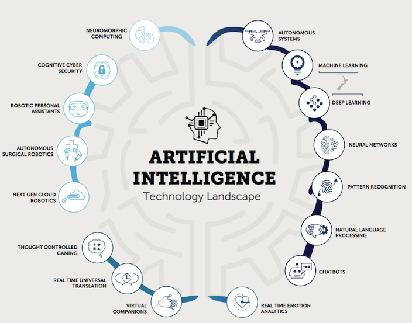
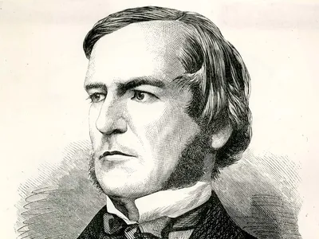
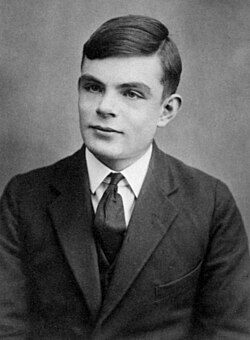

Analisis y Modelado
Grupo 3 Analisis y Modelado

Aristóteles y la lógica formal
Aristóteles fue uno de los primeros en intentar sistematizar el razonamiento humano mediante reglas lógicas. Sus ideas inspiraron siglos después el concepto de razonamiento computacional.

Machine learning
Inteligencia artificial que se enfoca en desarrollar algoritmos y modelos que permiten a las computadoras aprender de los datos y mejorar su rendimiento con el tiempo sin ser explícitamente programadas para cada tarea específica.

George Boole y el álgebra booleana
Boole formalizó la lógica con operaciones matemáticas que más tarde permitirían el desarrollo de circuitos digitales y lenguajes de programación.

Alan Turing y las bases de la computación
Turing propuso la idea de una máquina capaz de ejecutar cualquier proceso lógico. Su modelo teórico marcó el inicio del pensamiento algorítmico que haría posible la IA.
“Podemos considerar que el razonamiento es una forma de cálculo.” — Leibniz